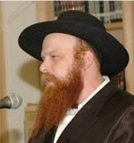

Here It Is Different
In the Daled Amos of the Rebbe there are different standards. Here one is not governed by the same laws of nature, nor is he restricted by physical impediments.

“Over a year had passed since our wedding, and there were still no children on the way. My wife finally went to see a top doctor in Paris, who stated that her chances of becoming pregnant were slim.
“In 5713/1953, a few years after our marriage, we arrived in Brooklyn, and it was then that we had our first yechidus with the Rebbe. I will add parenthetically that at that time, my grandfather Rabbi Menachem Mendel Dubrawski, of blessed memory, lived with us and shared our yechidus. The war had left him a broken man, but when the Rebbe rose and asked him to be seated, he refused. After reciting the SheHechiyanu blessing and the Rebbe’s blessings, Zeide said he was the uncle of the Rebbe’s father.
The Rebbe responded with his charming smile and said, “We know, we know.”
When I told the Rebbe about our long wait for children and the Parisian doctor’s diagnosis, the Rebbe dismissed it all and said the following unforgettable words, “דא איז אנדערש, Over here it is different. But since you need to operate within the parameters of nature, your wife should go to a local doctor.”
Then the Rebbe blessed us.
As New York was flooded with refugees, the Joint Distribution Committee wanted us to settle in Detroit, where a large Jewish community existed. Meanwhile my wife was examined by an American doctor, but he too had nothing positive to say. After months went by without our seeing the fulfillment of the blessings, I wrote to the Rebbe and detailed our requests. The Rebbe answered that we would see salvation, and he showered us with blessings.
More time passed with no change. Again I wrote to the Rebbe, and to this day, I don’t know where I got the nerve to ask not only for a blessing but for a promise.
I did not receive an answer to this letter; instead, my wife gave me the answer.
When I informed the Rebbe of the good news, he told me not to publicize it until three months had gone by. Later, on one of the Chassidic holidays, I traveled from Detroit to see him.
“Nu, how is your balabusta doing?” the Rebbe asked. “Whatever the doctor said, I hope?” Later, when my wife was visiting in Brooklyn, the Rebbe stopped her on the street and asked her how she was feeling and how the pregnancy was progressing.
Thanks to the Rebbe’s blessings, our oldest daughter Sarah was born. She is currently an emissary in Lyon, France.
• • •
The initial response of the Rebbe was that דא איז אנדערש, over here it is different. As we all understand, the Rebbe was not distinguishing between the medical prowess of the Parisian doctors and that of their American counterparts. In fact, as is emphasized in the story, the Rebbe only advised them to visit a local doctor in order to provide a natural vessel.
Rather, the Rebbe was explicitly informing them that here, in the Daled Amos of the Rebbe, in the presence of holiness, there are different standards. Here one is not governed by the same laws of nature, nor is he restricted by physical impediments. Here is a place where one is raised to a higher plane, where one begins to experience a loftier existence. Here the impossible can be expected, the unlikely becomes probable.
Here, the Rebbe is the boss.
This is a profound and vital message for each and every Chasid: How much of our lives are preoccupied with the struggle to overcome the natural obstacles that hinder our progress. How weighed down we are by our natural trappings, which anchor us so inescapably to this oppressive physical and mundane atmosphere. How we wish and dream of breaking free, to soar unencumbered to awesome new heights.
Well, the Rebbe informs quite unequivocally that there is, in fact, a way. All we need to do is to change our location. Get out your GPS or your Google maps, and find directions to דא, to HERE, because when we relocate to the Daled Amos of the Rebbe, then we can be confident of being freed from our shackles.
When R’ Mendel of Vitebsk (Horodoker), one of the senior Talmidei HaMaggid, was living in Eretz Yisroel, there was once a great commotion outside. Some individual, a bit deranged, went to the top of Har HaZeisim, and began blowing a shofar. When the people heard the sound of the shofar emanating from Har HaZeisim, they were convinced that it was heralding the arrival of Moshiach, and thus the commotion.
(Today, if there would be a shofar sound coming from Har HaZeisim, I doubt if many people would associate it with Moshiach. Some would attribute it to an air raid, some might think it’s a siren, the children would think it was some new video game, and many people would probably check to see if it were the new ring-tones on their cell phones. At best, someone might attribute it to some lunatic at the top of Har HaZeisim.
But then, it was naturally assumed to be Moshiach!)
R’ Mendel was in his room at the time, and asked his attendant what the cause of the commotion was. When he was answered, he opened up his window, stuck out his head, and pronounced: “Nein, es shmekt nisht fun Moshiach – No, there is no smell of Moshiach in the air.”
The Rebbe once recounted the above story during a farbrengen, and asked: Why was it necessary for R’ Mendel to open the window? Did he not have a full Ruach HaKodesh even within the confines of his own room?
The Rebbe answered (in the name of “chassidim”) that “Beim tzaddik in tzimmer, shmekt zich aleh mol fun Moshiach – In the room of the Tzaddik there is always the scent of Moshiach in the air!”
We all have the ability to relocate to the Rebbe’s domain; over there we are not overwhelmed by the darkness of Galus, nor intimidated by the megusham-ness of Olam HaZeh. There, here, we can be elevated to a loftier existence.
Every Chasid struggles (on occasion) with the desires and attractions of the animal within. The foreign interests and yearnings of our guf and Nefesh Ha’bahamis are frequently overwhelming and make our progress in serving Hashem seem very daunting. But this is only on account of our nature. We have to remember that there is a place where that nature doesn’t reign, where it is transcended. It is a place where we reach a higher state of being, where we don’t need to deal with nature altogether (except for appearances).
In the very beginning of this week’s Parsha, we learn about how Yaakov in his dream witnessed the “changing of the guard” between the angels of Eretz Yisroel with those of Chutza la’Aretz. In Eretz Yisroel, there is an entirely different regiment of Malachim. The Rambam writes (c.f. Likkutei Sichos Cheilek 5 – VaYeira) that the forces of nature that we deal with are referred to as Malachim, and in Eretz Yisroel, the Parsha teaches us, there is an entirely different system of Malachim. It is a completely different system of nature.
In our “holy land,” in the place from where we derive our holiness, i.e. in the Daled Amos of the Rebbe, Hashem deals with us entirely differently. There we don’t have to deal with the same “nature” as in Chutza la’Aretz.
So, how do we get דא? How to we ensure that we are indeed “here?” The simple way would be to transport our garments there, because that’s the part of us that we have the best grasp of. Take hold of your machshava, your thoughts, forcibly remove them from territory that (you know well) are foreign to the Rebbe, and insert them, instead, into the Daled Amos of the Rebbe, thinking about a sicha or a maamer. Grab your speech, as soon as you notice it deviating into areas where it doesn’t belong (that’s right, Lashon Ha’ra, Rechilus or Nivul Peh are some of the things that a Jew may not indulge in), and immerse it into words of Torah or davening. Grasp your hands, and ensure that they are engaged in acts that are fitting for a Chasid.
Put aside your personal goals and agendas and commit yourself to following the directives of the Rebbe, בטל רצונך מפני רצונו.
Although we may be using coercion to achieve this, once we get there we are in a place where we can actually find relief from our struggles, because we are in a different plane.
The month of Kislev is a Chodesh HaGeula. What better time to take advantage of the opportunity that we have to rise above our own personal Galus, and to live – at first individually at least – in a manner of Geula.
It begins with small but persistent, practical steps. Increase in your learning, in your davening, and in your chassidishe conduct. And have the recognition that it is in your ability to achieve a state in which you rise above your own limitations. It may not be possible via your own abilities, but you can get to a place where your limitations are no longer binding.
You no longer need to worry about how nature (your own nature and that outside of you) seems to make your goals so daunting and unreachable. You no longer have to worry about the morbid diagnosis and prognosis of nature altogether.
Because דא איז אנדערש!
L’chaim! May we all take a quick trip in our personal lives to the place where we are in close proximity to the Rebbe, through living our lives in a very practical way according to his directives, and may the Eibeshter in turn bring us all, דא – here – in the most literal sense, to be in the Rebbe’s Daled Amos in a real and visible way, and to be in Eretz Yisroel – all of us together – in a very tangible way, together with the first Rebbe – Yaakov – and with all of the generations, and without any further delay, by immediately sending us Moshiach Tzidkeinu Teikef U’miyad Mamash!!!
From a written farbrengen directed towards Alumni of Yeshivas Lubavitch Toronto
Rabbi Akiva Wagner. "Here It Is Different." Beis Moshiach, no. 857 (November 21, 2012).